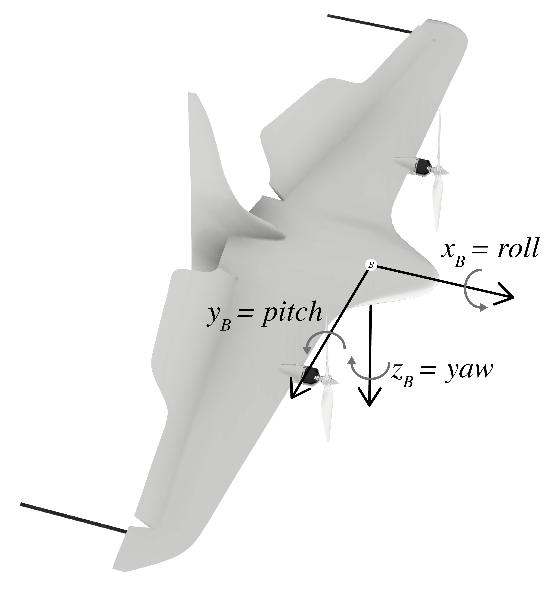
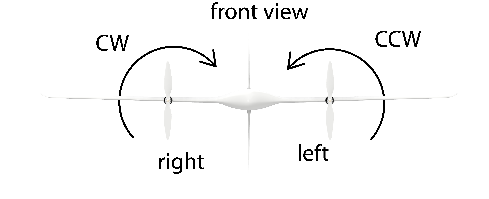
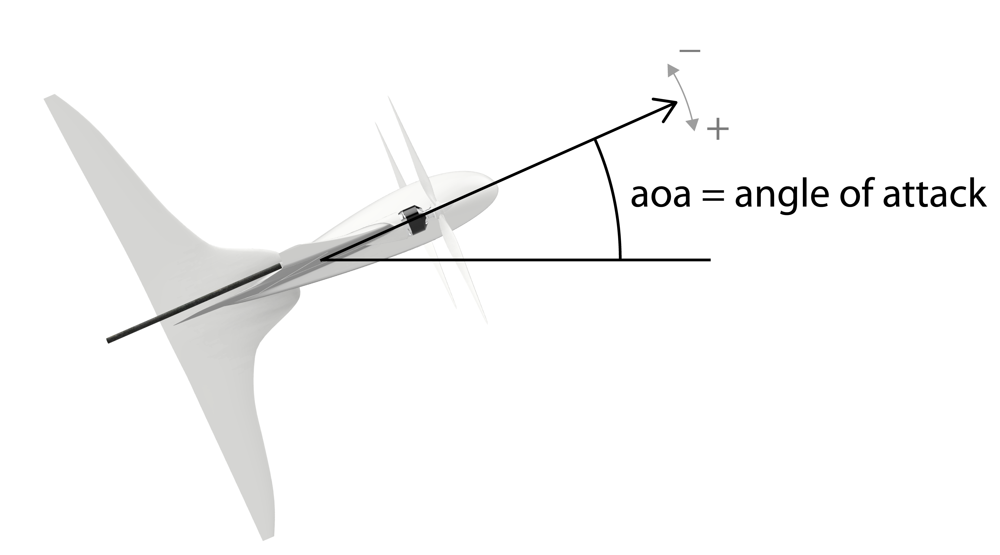

Frame definition
 |  |
|  |  |
 |
Body always refers to the CoM. Not the position of the IMU, the GPS or the aerodynamic pressure point.
Functions
Missing docstring for VtolModel.vtol_model(v_B, actions, param). Check Documenter's build log for details.
Missing docstring for VtolModel.aerodynamic_torque_model(v_B, actions, angle_of_attack, airspeed, param). Check Documenter's build log for details.
Missing docstring for VtolModel.propeller_torque_model(actions, param). Check Documenter's build log for details.
Missing docstring for VtolModel.aerodynamic_force_model(actions, aoa, airspeed, param). Check Documenter's build log for details.
Missing docstring for VtolModel.aerodynamic_force_model_wing_surface(actions, aoa, airspeed, param, lateral_airspeed). Check Documenter's build log for details.
Missing docstring for VtolModel.propeller_force_model(actions). Check Documenter's build log for details.